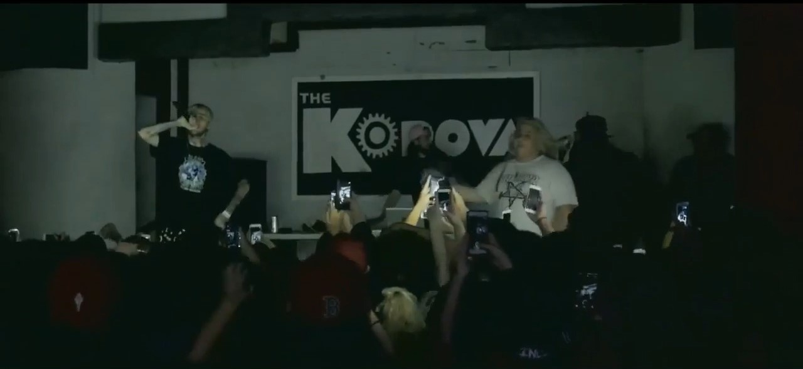
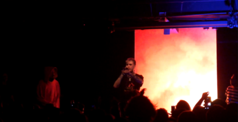
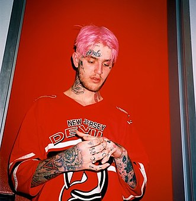
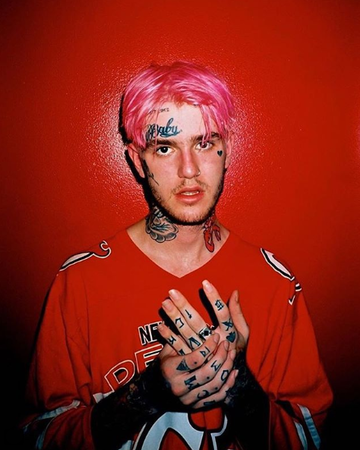

Contribute
Help Learn to edit Community portal Recent changes Upload file
Tools
What links here Related changes Special pages Permanent link Page information Cite this page Wikidata item
Print/export
Download as PDF Printable version
In other projects
Wikimedia Commons
Languages
العربية Deutsch Español Français 한국어 日本語 Português Русский 中文
Lil Peep
From Wikipedia, the free encyclopedia
Gustav Elijah Åhr (November 1, 1996 – November 15, 2017), known professionally as Lil Peep (often stylized as LiL PEEP or lil peep),[3] was an American rapper, singer, songwriter and model.[4] The child of Harvard graduates who divorced when he was a teenager, Gustav channeled working class themes into music compositions despite an affluent background. He was a member of the emo rap collective GothBoiClique. Helping pioneer an emo revival style of rap and rock music, Lil Peep has been credited as the leading figure of the mid–late 2010s emo rap scene and came to be an inspiration to outcasts and youth subcultures.[5]
Born in Allentown, Pennsylvania, and raised on Long Island, New York, Lil Peep started releasing music on SoundCloud in 2014,[6] using the pseudonym Lil Peep because his mother had called him "Peep" since he was a child.[7] He soon became popular on the platform for his collaborations with Lil Tracy and several mixtapes: Lil Peep; Part One (2015), Live Forever (2015), Crybaby (2016) and Hellboy (2016); the latter's success led him to his first solo tour across the United States.[8]
Soon after the tour, Lil Peep emigrated to London, where he recorded his debut studio album.[9] While his mixtapes explored emo, trap, lo-fi and alternative rock, his debut album Come Over When You're Sober, Pt. 1 (2017) was a transition into pop punk and rap rock.[10] His second album Come Over When You're Sober, Pt. 2 (2018) was a commercial and critical success, debuting at number four on the Billboard 200.[11] The documentary film about him, Everybody's Everything, was released in 2019.
Åhr made his struggles with substance abuse, depression and bipolar disorder a frequent theme of his work.[12] On November 15, 2017, two weeks after his 21st birthday, Lil Peep died on his tour bus of an accidental fentanyl/Xanax overdose before a scheduled performance in Tucson, Arizona.[13]
Contents
Early life
Gustav Elijah Åhr was born on November 1, 1996, in Allentown, Pennsylvania to first-grade teacher Liza Womack and college professor Karl Johan Åhr.[14] He had one sibling, Karl "Oskar" Åhr.[15] Åhr grew up on Long Island, New York.[16] His parents were both Harvard graduates who divorced when he was a teenager.[16][17] Åhr claimed to have Swedish citizenship on Twitter.[18]
Growing up, Åhr's father was absent,[19] with his father and mother divorcing formally when Åhr was 14.[20] He attended Lindell Elementary School and Long Beach High School in Lido Beach, New York, where he was often absent but received good grades[21] and made the dean's list.[22] He later dropped out of high school and took online courses to earn his diploma.[23] Shortly thereafter, he began posting his music on YouTube and SoundCloud.
At 18, Åhr got his first face tattoo, a broken heart below his left eye to help motivate him to make music.[24] He moved to Los Angeles to pursue a career in music under the stage name Lil Peep.[25] He said he moved to Los Angeles because living on Long Island depressed him.[19]
John Womack, an economist and historian of Latin America liberation movements, is Åhr's maternal grandfather.[26]
Career
When Lil Peep was a teenager, he called himself a loner who made most of his friends online. Inspired by underground acts like Seshollowaterboyz and iLoveMakonnen,[27] Peep made music while residing in Long Island[28] under the pseudonym "Trap Goose"[20] and lived temporarily with childhood friend Brennan Savage until both decided to move to Los Angeles.[29]
Lil Peep left high school early to move to Los Angeles and meet up with online friends. He initially lived in Skid Row, Los Angeles, and dipped in and out of homelessness,[22] staying at Savage's apartment while Savage pursued a degree. The two eventually went separate ways,[29] and Peep met Atlanta rapper and producer JGRXXN, Florida rapper Ghostemane and Houston rapper Craig Xen, living with them while forming the collective Schemaposse.[30] He originally met Craig Xen online and was introduced to JGRXXN, who needed a singer.[31] Lil Peep also attempted to attend Glendale Community College during his first year living in Los Angeles.[14] In 2015, Lil Peep released his first mixtape, Lil Peep; Part One, which generated 4,000 plays in its first week. Shortly thereafter, he released his first extended play, Feelz, and another mixtape, Live Forever.[32][33]
 Lil Peep began to grow in popularity soon after, with the song "Star Shopping" (later released as a single following his death[34]) released around the same time as Lil Peep; Part One making waves in underground hip-hop circles.[30] Lil Peep's popularity continued to grow after the release of the song "Beamer Boy", which led to him performing live for the first time with the rest of Schemaposse in March 2016 in Tucson, Arizona.[35] The following month, Schemaposse broke up and Lil Peep was no longer associated with a collective, though they remained on good terms.[36] Shortly after Schemaposse's breakup, Peep began to associate with Los Angeles-based rap collective GothBoiClique, featuring members of the group on his full-length mixtape Crybaby.[37] The group shared a squat in Skid Row with Peep and often shared beds.[24] Crybaby was recorded in three days with a $150 microphone. He did a majority of the mixing and mastering himself.[27] Crybaby was released in June 2016.[27] Later that month, First Access Entertainment (FAE) partnered with Lil Peep on a joint venture to invest in and advise him on his career.[38]
In addition to providing business guidance, co-founder/CEO Sarah Stennett was a friend who gave both moral and financial support, helping Peep realize his vision. In September 2016, Lil Peep released Hellboy.[39] Songs from Hellboy such as "Girls" and "OMFG" received millions of views and plays on SoundCloud and YouTube.[40] Hellboy's success led to Peep's first solo tour across the United States, the "Peep Show" tour, in April and May 2017.[41] In May 2017, the band Mineral accused Peep of copyright infringement for including an unlicensed and uncredited sample of their song "LoveLetterTypewriter" on his track "Hollywood Dreaming". Peep said that he was only trying to "show some love" with the sample.[42]
Soon after the tour was done, Peep emigrated to London, England, during a disentanglement with Gothboiclique. There he began to associate with figures such as Atlanta rapper iLoveMakonnen and longtime friend Bexey, and recorded Come Over When You're Sober, Pt. 1 and Come Over When You're Sober, Pt. 2, the EP Goth Angel Sinner and an untitled project with iLoveMakonnen.[43][44][45] Peep released his debut studio album, Come Over When You're Sober, Pt. 1, on August 15, 2017.[46] He also took his first world tour, starting in the UK in September[47] and moving to Germany before finishing in the United States in November, which was cut short by his death.[48]
Posthumous releases
After his death, Lil Peep's fanbase and popularity grew quickly, resulting in a significant increase in sales and streams of his music.[50] The single "Awful Things" from Come Over When You're Sober, Part One charted, becoming his first entry on the Billboard Hot 100 at number 79.
Due to Peep's prolific work rate, a number of songs and projects were completed prior to his death. The first official posthumous release arrived within 24 hours of his death, as Wiggy, a director of many of Peep's music videos, released the official video for the then-unreleased song "16 Lines".[51] On January 12, 2018, Marshmello officially released a collaboration titled "Spotlight".[52] The video for "Spotlight" was released on February 12, 2018. On January 15, 2018, rapper Juicy J released the song "Got 'Em Like", which featured Lil Peep and Wiz Khalifa.[53] On January 27, 2018, SoundCloud rapper Teddy released a song collaboration with Lil Peep, "Dreams & Nightmares".[54]
In March 2018, Peep's music archive was acquired by Columbia Records. On May 13, 2018, a posthumous single, "4 Gold Chains", featuring Clams Casino, was released as well as a music video.[55] A collaboration album between Peep and rapper iLoveMakonnen is expected to be released on Makonnen's label Warner Bros.[56] On August 17, 2018, Makonnen announced a new Lil Peep single, "Falling Down", a reworking of "Sunlight on Your Skin" that he recorded with Peep in the fall of 2017 in London. The new version features recently deceased rapper XXXTentacion, who recorded his verses following Peep's death.[57] The creation of the single was condemned by some surviving members of GothBoiClique, who said there had been unresolved conflict between the two artists stemming from latter's alleged history of violence towards women.[58] This was disputed by other close friends of Lil Peep.[59] "Falling Down" was released on September 19, 2018, and peaked at number 13 on the Billboard Hot 100.[60] The original "Sunlight on Your Skin" was released on September 27, 2018.[61]
Come Over When You're Sober, Pt. 2 debuted at number four on the Billboard 200 with 81,000 album-equivalent units (including 43,000 pure album sales), making it Lil Peep's first US top 10 album.[11][67]
On January 31, 2019, the first single from the upcoming collaboration album with ILoveMakonnen, "I've Been Waiting", featuring Fall Out Boy, was released.[68] The song was originally a demo by ILoveMakonnen; Peep then performed on it, spawning a partnership that created up to 20 songs. Fall Out Boy was added to the song after Peep's death.[69]
On March 10, 2019, the documentary Everybody's Everything, which chronicles Lil Peep's life, premiered at the SXSW Film Festival.[70] On November 1, 2019, the estate announced the release of the soundtrack to the documentary, which features both released and unreleased tracks.
In April 2019, "Gym Class" and "Star Shopping", two Lil Peep singles that were originally released in March 2016 and August 2015 respectively, were re-released onto all streaming platforms by the Lil Peep estate.[71] The 2016 EP Vertigo was subsequently released by the estate to streaming platforms on March 5, 2020.[72] The Peep estate officially released the Crybaby mixtape with most samples cleared to all streaming platforms on June 10, 2020 to coincide with the four-year anniversary of the original release.[73] The track "falling 4 me" was missing as it couldn't be cleared.[73] The estate released the Hellboy mixtape with most samples cleared on September 25, 2020, the fourth anniversary of its original release.[74] The song "drive by" was reproduced due to sample clearance issues.[75]
On January 26, 2021, the estate announced that the California Girls EP was to be re-released.[76] It was released on January 29, 2021 with a music video for the song "lil kennedy".[77] Later, on June 30, 2021, the estate announced the re-release of the Lil Peep and Lil Tracy collaboration EPs, Castles and Castles II. They were released on July 2, 2021 with video of past live performances of certain tracks from the EPs.
Fashion
Lil Peep had been into fashion since his teenage years and during the last months of his life he modelled for Vlone, and was invited to and attended several fashion shows such as Balmain men's show at Paris Fashion Week and Moncler Gamme Bleu MFW Mens Spring Summer show in Milan.[78][79][80] Nico Amarca of Hypebeast said “even though Peep's brand of trendy sits on a far more niche spectrum than most modern-day tastemakers, something that largely attributed to his success. In a time where genuine individuality is becoming increasingly obsolete, Peep was the tattoo-covered, Manic Panic-hued mall rat the creative world needed to disrupt its ever-growing homogeny."[81] Rapper Playboi Carti described Lil Peep as a "trendsetter".[81]
His style has been described as evoking fashion styles associated with emo[82] and mall goth.[83] He often wore items including graffitied jackets, colored fur,[84] and pink clothes.[83] He cited Fat Mike, Marcelo Burlon and the Casualties as style influences. In a 2017 interview with GQ, he stated:
I never dress the same way for a week—I’ll dress like a whole other person the next week. I like to get weird and mix things. Not necessarily draw on the streets, but mix darker, dirtier cultures with high class shit. And kind of fuse them together and see how they can become one. And I think that already happens when I put on any really elegant piece of clothing, because of the way I look. You expect me to dress like a fucking punk.[78]
In late 2018, it was announced that a Lil Peep clothing line was being created called "No Smoking" (stylized as "NO SMOK!NG") which was developed before Lil Peep's death.[85]
Musical style
Lil Peep was described as making lo-fi rap,[89] being an "emo-trap heart throb"[90] and an "emo rapper".[91][92] Music journalists often compared Lil Peep to singer-songwriter and guitarist Kurt Cobain.[93] New York Times music critic Jon Caramanica defined Peep as the Kurt Cobain of lo-fi rap, describing his music as gloomy and diabolically melodic.[94] Lil Peep himself encouraged the connection and persona in his musical and lyrical content, saying that he wanted to become the "New Kurt Cobain".[93][16] According to Angus Harrison from The Guardian, Lil Peep was "repurposing Kurt Cobain for bedroom diarists who are more used to rap than they are guitars."[95]
AllMusic described Lil Peep's music as a blend of hip hop and rock influences along with trap, punk, and dream pop.[96] His songs generally drew on the triple-time hi-hats of Southern rap and the angsty introspection of post-hardcore.[95] He combined elements of emo and pop punk into rap music, bringing a fresh take on the genre.[97] This resulted in him being described as the "future of emo" by Steven J. Horowitz of online magazine Pitchfork.[97]
As a burgeoning artist, Lil Peep gained a significant amount of traction in the alternative hip-hop scene, establishing a better platform for himself to speak to fans about topics of his concern such as mental health.[98] His lyrical themes include topics such as depression, drug use, past relationships, and suicidal thoughts and meshes together third-wave emo, alternative rock, pop-punk and dream pop with trap music and hip-hop.[96] A close friend and the executive producer of Come Over When You're Sober, Pt. 1 said that Peep "wanted to give a voice to people that suffer from anxiety and depression, people who have been abused, bullied, and the people who were misunderstood like him. He had demons of his own and he faced those demons by creating music."[28]
Death
See also: First Access Entertainment § Death of Lil Peep
On November 15, 2017, Lil Peep was found dead on his tour bus when his manager went to check on him in preparation for that night's performance at a Tucson, Arizona venue.[99] Foul play was not suspected,[100] with his death believed to be from an overdose.[101] In a series of Instagram posts in the hours leading up to his death, Lil Peep claimed to have ingested psilocybin mushrooms and cannabis concentrate. In another, he claimed to have consumed six Xanax pills following a video depicting his attempts to drop an unidentified pill into his mouth several times before successfully swallowing one and shaking a full prescription bottle. A subsequent post was captioned "When I die, you'll love me."[102] In the days after his death, a police report revealed that Lil Peep had taken a nap around 5:45 p.m. before the concert. His manager checked on him twice and found him sleeping and breathing fine, but was unable to wake him. When the manager checked on Lil Peep a third time, he was unresponsive and not breathing. Lil Peep's manager performed CPR before medics arrived, though he was pronounced dead at the scene.[103]
On December 8, the Pima County Office of the Medical Examiner released details from a toxicology report, certifying the cause of death was an accidental overdose due to the effects of the pain medication fentanyl and the benzodiazepine alprazolam.[104] Blood tests were positive for cannabis, cocaine and the painkiller Tramadol. Urine tests also showed the presence of multiple powerful opioids, including hydrocodone, hydromorphone (dilaudid), oxycodone and oxymorphone. There was no alcohol in his system.[1]
Tributes
Numerous artists in the music industry paid tribute to Lil Peep following his death, including Diplo, Post Malone, Pete Wentz, Marshmello, Mark Ronson, Zane Lowe, Sam Smith, Bella Thorne, Trippie Redd, A$AP Nast, Rich Brian, Playboi Carti, Ugly God, Lil Uzi Vert, Lil Xan, Ty Dolla Sign, Lil Pump, Dua Lipa, and El-P.[105][106] Jon Caramanica, a music critic for The New York Times, held a special remembrance podcast episode to honor Peep following his death which was released on November 22, 2017.[107] Good Charlotte also honored Lil Peep, releasing a cover of "Awful Things", which was shown at his memorial in Long Beach, New York on December 2, 2017.[108] Three Days Grace paid tribute by posting a video on Instagram and Twitter of a remix of Peep's song "Witchblades" featuring Lil Tracy. The remixed song's beat was a slowed down instrumental track of the band's song, "The Real You". Lil Peep would be mentioned by Juicy J (who had collaborated with him before his death) on Rae Sremmurd's Powerglide. Lil Peep was also honored during the 60th Grammy Awards. On June 19, 2018, rapper Juice WRLD released a two-song EP titled Too Soon.. dedicated to him and XXXTentacion, the latter being murdered in June 2018.[109][110] In The 1975 track, "Love It If We Made It", there is a lyric that gives a tribute to Lil Peep: "Rest in peace Lil Peep, The poetry is in the streets".[111] In the song Glass House, by Machine Gun Kelly, which pays tribute to many deceased artists, Lil Peep is mentioned in the lines: "Wish Lil Peep and me had met, but I can't get that back". Fellow emo rapper XXXTentacion shared similar sentiments, saying that if he and Lil Peep had known each other better that they would have been good friends.[112] XXXTentacion recorded a verse for a song in tribute to Lil Peep prior to his own murder, which was later turned into the posthumous collaboration "Falling Down".
Lil Peep was cremated at Huntington Station, New York and his ashes were placed in his grandfather's garden.[14] On December 2, 2017, friends, family and fans paid their respects to Lil Peep at his memorial in Long Beach, New York.[113] A memorial was also held in London on the same day that a large picture of Lil Peep was projected onto the side of the Houses of Parliament in central London.[114]
Legacy and influence
 Before dying at the age of 21, Lil Peep came to be an inspiration to outcasts and youth subcultures drawn together by the internet.[116] He earned legions of fans in a short time from both hip hop and emo subcultures.[117] Although he did not claim so himself, he is widely considered to have made a style of music that has been since regarded "emo rap."[118][95] He has been credited as the leading figure of the mid–late 2010s emo music scene[119] and is commonly cited as an inspiration for upcoming emo rappers.[120]
At the time of Lil Peep’s death, he was on the cusp of something significant. Three months earlier, he’d released Come Over When You’re Sober, Pt. 1, the album that took the skeleton sound he’d developed in his bedroom — emo sentimentality, thunderous hip-hop underbelly, rock-star insouciance — and thickened it up. His mixtapes Hellboy and Crybaby, released on SoundCloud, were on the front lines of hip-hop’s open-eared engagement with other genres, as well as documents of the ways emo and pop-punk had begun to make room for hip-hop. He was at the musical vanguard and, covered in a symphony of tattoos, an emerging fashion icon as well. – New York Times music critic Jon Caramanica[121]
In 2017, Pitchfork hailed Lil Peep as "the future of emo."[97] Regarding his death, in January 2018, John Jeremiah Sullivan of GQ wrote, "When Lil Peep died late last year, he left behind an outsized legacy."[122] Rolling Stone journalist Elias Leight concurred similarly and wrote that Lil Peep's "rise to stardom was powered by relentless drive."[123] A profile on his artistry was written by Billboard editor Steven Horowitz.[97] The lengthy article resulted in an influx of think pieces centered around Lil Peep amongst writers, with music publications such as Noisey discussing his role within the broader emo genre. Though it allowed Peep to gather attention from a wide audience beyond his SoundCloud base, the piece polarized readers, some of whom protested applying the "future of emo" label to the young rapper in the headline.[118][97] However, Lil Peep has since become regarded being an integral part of a "post-emo revival style of hip hop and rock",[124][125][126][127] and had been described as "arguably the biggest emo icon of the past few years"[128]
The death of Lil Peep left an impact on several of his musical contemporaries.[129] Lil Uzi Vert offered tribute by sharing on Twitter an edited version of one of the final photos Lil Peep had shared online.[129] The news of Lil Peep's tragic passing greatly affected Lil Uzi Vert, who shortly tweeted, "We would love 2 stop ..... but do you really care cause we been on xanax all fucking year. [...] Rip buddy I 100% understand and I don't fault u."[129] The prescription pills Xanax has since become an epidemic in the hip hop realm, particularly among the current SoundCloud generation.[130] The SoundCloud rap scene Lil Peep originated from is notorious for its drug use, with artists often abusing prescription pills such as Xanax which have since become a go-to metaphor in their lyrics.[131] In an assessment of the reactions, many were hopeful Lil Peep's death has served as a wake-up call for the community regarding drug abuse.[130] After offering his thoughts, Lil Uzi Vert indicated he was looking to do something for himself in response to Lil Peep's untimely passing.[130] Lil Uzi Vert also seemed to make attempts to detox, and the following Thursday tweeted an update saying he was sober for the day and already shaking.[129]
In the years following his death, Lil Peep became influential on the development of the e-girls and e-boys subculture,[132] with the New York Post describing him as "the patron musical saint of e-land".[133]
Attitudes towards abuse of women
In addition to calling him "the future of emo," Pitchfork also posited that Lil Peep's willingness to be vulnerable was an antidote to the toxic attitude towards women, which in the past has been a core element of hip-hop culture and its rap-rock variant.[134] According to fellow GothBoiClique member, Fish Narc, Lil Peep explicitly rejected contemporary SoundCloud rapper XXXTentacion for his alleged history of violence against women, spending time and money removing XXX's songs from his Spotify playlists.[58] On the contrary, rapper Fat Nick, a mutual friend of Lil Peep and XXXTentacion, said on Twitter that right before Peep died, he and Peep had a conversation about XXXTentacion and had planned to meet up with him, and that XXXTentacion was "super happy about it".[59] Fat Nick also spoke about the matter on an Instagram livestream, where he dismissed the claims from Fish Narc and others about tension between XXXTentacion and Lil Peep. In the livestream, he also implied that members of GothBoiClique were responsible for Lil Peep's death, saying, "Some of y'all are siding with the people that took advantage of Peep. I don't get it... That's crazy. Y'all say shit about fucking X, but you're not saying shit about the people that killed [Lil Peep]... The people that gave him fentanyl. Y'all don't say shit to them."[135] After this, Fish Narc faced criticism for his initial statement condemning the song. Fish Narc responded on Twitter, "I feel that people think I am trying to insult X. But really I wish him rest. I protest a posthumous collab between unaffiliated artists," and clarified that he did not wish to attack XXXTentacion and that his comments were, "how I interpreted what Peep told me as a friend."[136][137] When the posthumous 2018 single, "Falling Down", uniting the two deceased rappers was created without Lil Peep's consent, his fans and friends opposed the retroactive inclusion of XXXTentacion. His surviving band members posted a story onto Instagram disavowing the collaboration and imploring others not to listen to it.[58] Following his death, Mic bemoaned: "Sadly, Peep had barely just begun bringing emo into the future with a message that many of his less woman-friendly influences, like Brand New, have failed to put forward." He continued saying, "For a 'crybaby' who left this world so young, Peep inspired a lot of people to keep going."[134] The day after hearing news of his death, rapper Lil B paid tribute through a tweet. He wrote, "I remember Lil peep telling me he is against the sexual abuse of women and people in the music industry ... I will continue to push his vision."[138]
Achievements
Having arisen from SoundCloud scene, Lil Peep was a large presence on social media and came to be revered online.[139][95] He attracted a cult following through the songs he released and their emotional, downtrodden lyrics.[140] Lil Peep also enjoyed the draw of his YouTube channel, where several millions of views were generated by his music videos for "Awful Things," "Benz Truck," "The Brightside" among others.[141]
According to The Atlantic, "If you were going to bet on the young musicians most likely to soon be superstars, until yesterday, a lot of smart money would have been on Lil Peep."[117] Lil Peep had laid before him a promising career, which had been on the rise since 2015 thanks to a series of tracks, EPs and mixtapes released on SoundCloud.[141] After being around for a little more than a year, Lil Peep had already managed to amass millions of hits on YouTube and SoundCloud.[139] A year after posting his first song, Lil Peep attracted 82,000 followers on SoundCloud and 112,000 followers on Instagram.[142] The burgeoning rapper had generated millions of online streams before releasing his debut album Come Over When You're Sober Pt. 1 in August 2017.[143] Despite being involved with GothBoiClique for the shortest amount of time, Lil Peep become the first of his group to be paid serious critical attention as well as tour internationally.[139] Due in part to his divisive nature, Lil Peep made his way onto Pitchfork's "Best Songs of the Year" list and completed a largely sold-out tour of Russia and Europe.[139]
Personal Life
Lil Peep was candid about struggles with his sexuality, depression, heartbreak, and drug use.[141] Lil Peep came out as bisexual in a Twitter post on August 8, 2017.[144][145][97] He took to Twitter to open up about this aspect of his personal life to his fans.[98] Lil Peep simply stated, "yes i'm bi sexual."[97] Some time later, he followed up the post by asking his fans if any of them wanted a kiss.[97][98] After coming out as bisexual, he would regularly confront homophobes on Twitter.[146] He was also known collaborators with iLoveMakonnen, an openly gay recording artist whose music also blurs the line between rap and rock.[146]
Lil Peep came out around the time he and actress and singer Bella Thorne began dating in September 2017.[97][147] Shortly after the release of his debut studio album, the two were spotted kissing. They briefly dated, before Thorne became involved with rapper Mod Sun.[97] While on the Come Over When You're Sober tour, Lil Peep had met and started dating Instagram influencer Arzaylea Rodriguez around the time of his death in November.[148]
Lil Peep actively talked about his issues with depression, anxiety and substance abuse and stated that he had bipolar disorder.[19] Alongside drug use, Lil Peep struggled with suicidal impulses that date back to his adolescent years.[149] On the track “OMFG” from his breakthrough mixtape Hellboy, Lil Peep talked about wanting to kill himself.[142] During an interview, he was asked if he was suicidal. Lil Peep replied, "Yeah, it is serious. I suffer from depression and some days I wake up and I'm like, Fuck, I wish I didn't wake up. That was part of why I moved to California, trying to get away from the place that was doing that to me, and the people I was around."[142] He continued, "I realized it was just myself—it's a chemical imbalance in my brain. Some days I'll be very down and out, but you won't be able to tell, really, because I don't express that side of myself on social media. That's the side of myself that I express through music. That's my channel for letting all that shit out."[142] He claims the frankness with which he spoke about difficulties in his life led to an intense connection with his fans through his music. In an interview with The Times, Lil Peep stated, "They tell me that it saved their lives. They say that I stopped them from committing suicide, which is a beautiful thing. ... It's great for me to hear. It helps. It boosts me, because music saved my life as well."[149]
Lil Peep was not medicated for depression. While those around him insisted, he didn't want to, and opted to just smoke marijuana and whatever other drug came his way.[142] In his final interview before his death with Zane Lowe, Peep confessed that his depression was getting worse saying "Things just get worse. Things already get worse and worse and worse every day."[150] Lil Peep regularly referenced addictions to cocaine, ecstasy and Xanax in his lyrics and posts on social media,[151] where he described himself as a "productive junkie" and advised his audience to avoid drug use.[152]
Lil Peep had a close relationship with his mother, going so far as to tattoo her initials and birthday on his arm as his first tattoo at the age of fourteen.[7] He played the trombone and tuba[153] and expressed an interest in music and fashion from a young age. At the time of his death, Lil Peep was residing in Portobello Road, London with his friend and close collaborator, Bexey[154][19] and Smokeasac. The move was provoked by Peep's need to escape his circumstances and his then-collective GOTHBOICLIQUE.[44][88]
Discography
Main article: Lil Peep discography
| Lil Peep | |
|---|---|
|
 Lil Peep in 2016 |
|
| Born |
Gustav Elijah Åhr November 1, 1996 Allentown, Pennsylvania, U.S |
| Died |
November 15, 2017 (aged 21) Tucson, Arizona, U.S. |
| Cause of death | Accidental fentanyl–alprazolam (Xanax) overdose[1] |
| Resting place | Cremated, ashes buried in grandfather John Womack's garden. |
| Other names | Trap Goose |
| Occupation | Rapper, singer, songwriter, model |
| Years active | 2014–2017 |
| Partner(s) | Arzaylea Rodriguez (2017)[2][a] |
| Relatives | John Womack (grandfather) |
| Musical Career | |
| Origin | Long Beach, New York, U.S. |
| Genres | Emo rap, trap, lo-fi, alternative rock, pop punk |
| Instruments | Vocals |
| Labels | First Access, Columbia |
| Associated acts | GothBoiClique, Schemaposse, Lil Tracy, iLoveMakonnen, Wicca Phase Springs Eternal |
| Website | lilpeep.com |